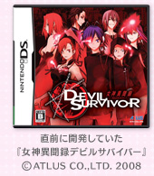
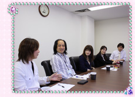

| NOM： | そもそも、この変わったソフトの開発はどのようにして始まったのでしょうか。 |
| 安藤： | 私のつぶやきがきかっけなんですよ。私は普段は外部の開発会社さんと一緒に主にポケモン関係のソフトウェアを作っていて、完全新作の仕事は初めてなんですが、私が「やまがみさ〜ん、わたし〜プリクラ作りたい」って。 |
| 山上： | 山上です。面白そうな企画は何にでも挑戦しますので、N.O.Mでもよく紹介してもらっています。で、安藤に、「なぜ作りたいの」って聞いたら、DSiカメラよりも「ハジけたものがほしい」と。DSiカメラも凝ったことができていいんだけど、プリクラみたいなもっとキャピキャピしたものが女の子にはウケるはずだと言うんです。じゃあ、「企画書を書きな、でも3日以内に（笑）。」ということで企画書ができました。で、やはりプリクラだったら元祖のアトラスさんだろうと考え、社内の普段アトラスさんとお付き合いのある部署からアトラスさんを口説いてもらったんです。 |
| 高田： | プロデューサーの高田です。「任天堂からDSiでプリクラのソフトを出さないかという話がきている」と聞いたとき、ちょうど私たちのチームが『女神異聞録デビルサバイバー（※）』というDSソフトの開発が終わって、ひと段落ついていたときだったので、よくわからなかったのですが、楽しそうなので引き受けました（笑）。 ※女神異聞録デビルサバイバー…2009年1月15日にアトラスから発売された、シミュレーションRPG。 |
 |
| 山上： | そのときに、任天堂から無茶なお願いをしたんです。初めての仕事なのに、「エース級のスタッフを出してほしいです！」と。 | |
| 高田： | うちも初めてのお付き合いだったので、何かあっちゃいけないと思って、もともとエース級をとりそろえてました（笑）。 |
| 古東： | アトラスでデザイナーをしている古東です。最近は『デビルサバイバー』でアートディレクターをしていたんですけど、今回はアートディレクター兼ディレクターということで全体的に関わらせていただきました。普段は、ディレクターに「早く仕様を書いてください」とせっつく立場なのですが、今回「仕様を書くのは大変なんだ」と思いました（笑）。 |
| 松田： | 私はプログラマーとして、これまでは『グローランサー』や『デビルサバイバー』などに関わっていました。今回は、変わった感じのソフトでした（笑）。 |
| NOM： | 普段は、みなさんプリクラを撮られるんですか？ |  |
| 古東： | 現役時代はそりゃ撮りました。コギャル、アムラー世代と同世代なんですけど。 | |
| 安藤： | その頃はまだらくがきができなかった頃ですね。フレームにはまりにいって撮るというかたちでしたね。 | |
| 古東： | でも、子供心に、「これはすごくヒットするに違いない」と思ったことをよく覚えています。 | |
| NOM： | 男性のみなさんは？ | |
| 山上： | 撮りません。 |
| 高田： | 若い頃に誘われてちょっと撮ったくらい。 |
| 山上： | 今回は（女性である）古東さんと安藤の感覚に訴えるものを作って、それがターゲット層の女の子に当たるのであれば、それはもう新しい1つの世界だと思って、お任せしていました。遠慮することないから、弾けてほしいと伝えて、安藤も古東さんにのっていく方向で本当に楽しいものができたなという気がします。技術のスタッフも最後までついてきてくださってよかったです。 |